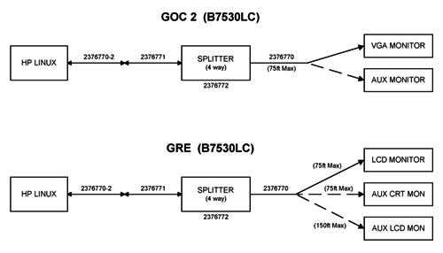

Operating Documentation
Direction 2378260-800, Rev# 10
GOC3 Service Methods (Adv)
Operating Documentation |
| Last Revised: | 03 November, 2003 |
This DICOM Setup module includes the following sections:
Section 2 - Customer Options Installation & Verification Checklist
Section 3 - DICOM Network Introduction
Section 4 - Before You Start
Section 5 - Declaring the System on the Hospital Network
Section 6 - Declaring Remote Hosts on the System
Section 7 - Declaring the CT System on Remote Hosts
Section 8 - DICOM HIS/RIS Setup
Section 9 - DICOM Filming Devices Setup
Section 10 - Remote & Auxiliary Monitors
| NOTE: | Use only the Installation manual that arrives with your system for installation. Any other revisions of this manual may not exactly match your system. |
 AW functional tests completed.
AW functional tests completed.
Filming/Camera/DASM functional tests completed.
Network items installed and functional tests completed.
Verify that all customer software options are installed and functional.
Direct 3D
SmartScore Pro
CT Perfusion
Auxiliary Monitor (upgrade kit may be required)
Flat Panel
CRT
Modem (if required, order Modem Kit)
GE Prints and schematics for mechanical (physical) location of option
FDO shipment for identification of items
Installation Specialist for installation instructions if they differ from print
Refer to documentation shipped with camera
DICOM 2210573 GE Document
DICOM Print 2152913
Refer to the directions provided:
Pre-install 2111833
Service 2111831
LightSpeed systems support two basic Networking Protocols:
Advantage NET (IC, Signa 4.X, CT-HLA, CT/I, ...)
DICOM (CT/I, CT Synergy, Advantage Workstations, ...)
DICOM networks basically operate on the tasks or services that various devices on the network use or provide. These services are labeled as Application Entity Titles (AE Titles). The LightSpeed system is a user of six DICOM Network Services and is a provider of two DICOM Services:
Send or Push images to another network device.
Send or Push images to a DICOM Printer.
Review image database on another device and retrieve or Pull selected images from that device (Query/Retrieve User).
Send or Push images to a an image storage device and obtain confirmation that the images have been archived (Storage Commitment).
Obtain Patient Worklist Information from the Hospital HIS/RIS System.
Store images on MOD media.
For each DICOM Service that the CT system will be a User (except for storing images on MOD media), you must declare this device on the CT system using three menu selections. For some devices, you must declare not only the device, but each service (AE Title) that the device provides. For example, you may be required to declare a PACS System twice on the CT system: once as a destination to push images and, second, as destination that provides storage commitment capability after images have been pushed.
Receive Pushed images from another network device
Allow another network device to review the CT image database and to retrieve or Pull selected images (Query/Retrieve Provider)
For each DICOM Service that the CT system will be a Provider, you must declare the CT system on the network device that will be using these services.
Information required to complete configuration of a hospital DICOM network is provided by the hospital network administrator (hostnames, IP Addresses) and the DICOM Conformance Statement document (AE Titles, Port Numbers) provided with each DICOM compatible network device on the network.
Before setting up the CT system on the hospital network, verify the following physical items are complete:
CT console, monitor, keyboard, and mouse are installed and connected.
CT system power is ON.
Hospital Ethernet network RJ45 Class IV twisted pair cable is connected to the CT console network receptacle.
Hospital network connection is operational and is running 10baseT or 100baseT.
To declare the CT system on the network, ensure the following network identity information is available from the Hospital Network Administrator:
Hostname (No more than 16 Characters)
Internet Protocol (IP) Address
Subnet Net Mask IP Address (if applicable)
Broadcast Address (if applicable)
To declare DICOM remote hosts (PACS systems, archival devices, review workstations) on the LightSpeed 4.X system, ensure the following information is available for each remote host:
From the Hospital Network Administrator:
Hostname
Internet Protocol (IP) Address
Network Protocol (DICOM for LightSpeed Systems)
From the Remote Host Device DICOM Conformance Statement Document:
DICOM Application Entity Title or AE Title (DICOM service that remote host provides or uses)
DICOM Listening Port Number
To declare DICOM Hospital HIS/RIS Interface devices (Mitra and others) on the LightSpeed System, ensure the following information is available:
From the Hospital Network Administrator: Internet Protocol (IP) Address
From the HIS/RIS Interface Device DICOM Conformance Statement Document:
DICOM Application Entity Title or AE Title (DICOM Service that the HIS/RIS interface provides)
DICOM Listening Port Number
To declare DICOM on the LightSpeed System, ensure the following information is available for each printer:
From the Hospital Network Administrator:
Hostname
Internet Protocol (IP) Address
From the Printer DICOM Conformance Statement Document:
DICOM Application Entity Title or AE Title (DICOM service that remote host provides or uses)
DICOM Listening Port Number
To declare the system on the Hospital Network:
Enter Configuration Routine
Configure Network Settings
Initiate System Reconfiguration
For complete details on this procedure, please see Declaring the System on the Hospital Network.
To declare remote hosts on the system:
Enter Remote Host Configuration Screen
Declare Advantage NET Remote Hosts on the System
Declare DICOM Remote Hosts on the System
For complete details on these procedures, please see Declaring Remote Hosts on the System.
Refer to the appropriate service manual provided with the Advantage NET Protocol device or system to find instructions how to declare the CT System as an Advantage NET remote host.
Refer to the appropriate Service Manual provided with the DICOM protocol device or system to find instructions how to declare the CT System as a DICOM remote host.
The CT System provides two DICOM Services as a provider to remote hosts:
A remote host can push images to the CT image database.
A remote host can review the CT image database (query) and pull selected images (retrieve).
Use the following LightSpeed parameter information to configure the DICOM device/system to either push images to the CT scanner and/or perform a Query/Retrieve operation:
Hostname: Provided by the Hospital Network Administrator. Exactly the same LightSpeed assigned hostname entered in Network Configuration Screen.
Application Entity Title: Exactly the same entry as the Hostname.
Network Address: Provided by the Hospital Network Administrator. Exactly the same LightSpeed assigned IP Address entered in Network Configuration Screen.
Network Protocol: DICOM 3.0.
Port Number: For all DICOM service that the LightSpeed System provides, use 4006.
Provider Type: This field concerns the LightSpeed DICOM Query/Retrieve provider capability. All LightSpeed systems are wtudy root systems, which allow queries at the exam, series, and image level.
Support Worklist: This field concerns whether a DICOM Query/Retrieve provider capable device or system supports a filter search of the image database. All LightSpeed systems support a filtered search of the image database as part of the LightSpeed DICOM Query/Retrieve provider capability.
Procedure Prerequisites:
Most hospital HIS/RIS systems are not DICOM compatible and require a DICOM HIS/RIS Worklist Interface to provide patient scheduling information to the CT system. Contact your local HNS support engineer to determine exactly what DICOM HIS/RIS Interface is appropriate for the customer.
In addition, the CT system must have the ConnectPRO software option installed to utilize the DICOM Protocol Worklist capability.
Procedure Details: Please follow the process described in Loading ConnectPRO Software Option.
Before configuring DICOM filming devices (cameras, printers) on the CT System, ensure the following are complete:
Filming Device Service Representative to assist in camera/printer setup for best CT image quality film presentation.
Hospital DICOM network is operational.
Filming device is connected to the DICOM network with the correct filmer DICOM interface.
Filming device is DICOM protocol compatible.
Filming device DICOM Conformance Statement document is available.
| NOTE: | Filmer DICOM Application Entity Titles may be site specific. Make sure that you check with the Filming Device Service Representative and the hospital network administrator to ensure you are using the correct AE Title for the destination filming device. |
| Potential For Data Loss Empty all filming queues before modifying camera parameters. | |
Follow the procedure described in Declaring DICOM Filming Devices on the CT System. Record all appropriate information in the Camera Data Tables
( ).
).
Some Genesis based systems have teleradiology (TR) systems that framegrab the Genesis GFB video (512 x 512 50/60Hz). LightSpeed DOES NOT directly support this type of TR. The LightSpeed RGB color display video is a much larger format at a much higher pixel frequency. GE does not promise any direct compatibility with framegrabbing TR systems (DICOM 3.0 TR systems may work depending on the DICOM implementation but GEMS does not and cannot validate all the various TRs.)
In the framegrabber case, a high quality (300Mhz bandwidth) video splitter/amplifier (as listed above) is needed to intercept and re-drive the display CRT RGB video. Composite grey scale would then be available on Green #2 (1280x1024 pixels at 72Hz). Any framegrabber hardware attempting to capture this signal must be capable of a 140Mhz pixel rate. This also involves TR system configuration parameters. The TR capture software may also need upgrading to deal with 1280x1024 and/or crop the signal. The TR remote display software may need upgrading to view the larger format. The image transmission times to the remote TR may be up to 4 times as long. GEMS will supply all technical information necessary to assist TR suppliers in making their systems work with LightSpeed, but GEMS cannot be responsible for this third party TR equipment, software, or compatibility with LightSpeed.
The following common parts are available from GE Medical Systems:
Table 1: Common Parts Available From GEMS
| Part Number | Description |
| 2237018-2 | Four-way Video Splitter (BNC Converter) |
| 2154425 | BNC to BNC 7’ Splitter Cable |
| 2142221 | BNC to Octane 7’ video Cable |
| 2256482 | DB15 to Octane 7’ Video Cable |
| 2256485 | DB15 to BNC 7’ Adapter Cable |
Illustration 1 shows the only approved GE CT configuration for remote monitors, including the part numbers for the only approved components. The use of other configurations and/or components should be strictly avoided.
Illustration 1: Video Splitter / Monitor Cabling

| NOTE: | The analog (VDB) video output specs and serial interface were specified from, and are the same as, the Genesis interface output specs. This does NOT apply to the digital (LCAM) filming interface. |
Table 2: Video Output (Measured Into 75Q at BNC Output)
| Output | Value |
| amplitude | 1 volt peak-to-peak |
| video | 0.643V ± 10% |
| setup | 0.071V ±10% |
| sync | 0.286V ± 10% |
| DAC resolution | 8 bits |
| diff. linearity | ±1 LSB max |
| glitch area | 80 picovolt seconds max, for any step size |
| rise/fall times | > 10 nsec, ± 10-90% |
| FS settling time | 7.5 nsec typical to 1 LSB |
| transfer function | guaranteed monotonic |
| noise level | > 5.0 millivolt peak-t~peak, combined sync/async noise |
| DC offset | ±1 VDC referenced to ground |
Table 3: Pixel Clock Output
| Output | Value |
| logic family | F series TTL |
| output low level | 0.8VDC max |
| output high level | 2.OVDC mm |
| output period | 41.336 nsecs ±10% |
| transition times | 10 nsec max, ± 10-90% |
Table 4: Video Timing Characteristics
| Video Timing Characteristic | 60 Hz | 50 Hz |
| pixel frequency | 24.192 MHz | 24.192 MHz |
| pixel period | 41.336 nsec | 41.336 nsec |
| horizontal line frequency | 33.6 kHz | 33.6 kHz |
| horizontal line width | 720 pixels | 720 pixels |
| horizontal active | 544 pixels | 544 pixels |
| horizontal blanking | 176 pixels | 176 pixels |
| horizontal front porch | 26 pixels | 26 pixels |
| horizontal sync | 76 pixels | 76 pixels |
| horizontal back porch | 74 pixels | 74 pixels |
| vertical frame frequency | 60 Hz | 50 Hz |
| vertical frame time | 560 lines | 672 lines |
| vertical active | 524 lines | 524 lines |
| vertical blanking | 36 lines | 148 lines |
| vertical sync | 3 lines | 3 lines |
| vertical back porch | 30 lines | 86 lines |
| vertical front porch | 3 lines | 59 lines |
| scanning format | non-interlaced | non-interlaced |
Table 5: Video Display Format
| Format | Value |
| visible field | 544 pixels by 524 lines |
| image field | 512 pixels by 512 lines |
| greyscale field | 32 pixels by 16 level grey bar on left side of image |
| greyscale | software selectable on/off |
| greyscale off value | 0 (black) |
| initial greyscale | 255 (white) at upper left corner |
| border field | 12 lines at bottom of visible field |
| border field value | any 8-bit value, software programmable |
Table 6: Host Communications/Control Serial Port (analog interface only)
| Attribute | Value |
| interface | R5422 |
| 25D conn pinout | pin 8 (RX+), pin 21 (RX-), pin 9 (TX+), pin 22 (TX-), pin 7 (GND) |
| baud rate | 1200 baud |
| word length | 8 bit, 1 start bit, 1 stop bit |
| parity | even |
| type | asynchronous |
| NOTE: | The digital DASM/LCAM serial control has standard R5232 on pins 2, 3, & 7. |
| NOTE: | The analog (VDB) video output specs and serial interface were specified from, and are the same as, the Genesis interface output specs. This does NOT apply to the LightSpeed digital (LCAM) filming interface. |
Table 7: Video Output (Measured Into 75Q at BNC Output)
| Output | Value |
| amplitude | 1 volt peak-to-peak |
| video | 0.643V ± 10% |
| setup | 0.071V ±10% |
| sync | 0.286V ± 10% |
| DAC resolution | 8 bits |
| diff. linearity | ±1 LSB max |
| glitch area | 80 picovolt seconds max, for any step size |
| rise/fall times | > 10 nsec, ± 10-90% |
| FS settling time | 7.5 nsec typical to 1 LSB |
| transfer function | guaranteed monotonic |
| noise level | > 5.0 millivolt peak-t~peak, combined sync/async noise |
| DC offset | ±1 VDC referenced to ground |
Table 8: Pixel Clock Output
| Output | Value |
| logic family | F series TTL |
| output low level | 0.8VDC max |
| output high level | 2.0VDC mm |
| output period | 41.336 nsecs ±10% |
| transition times | 10 nsec max, ± 10-90% |
Table 9: Video Timing Characteristics
| Video Timing Characteristic | 60 Hz | 50 Hz |
| pixel frequency | 24.192 MHz | 24.192 MHz |
| pixel period | 41.336 nsec | 41.336 nsec |
| horizontal line frequency | 33.6 kHz | 33.6 kHz |
| horizontal line width | 720 pixels | 720 pixels |
| horizontal active | 544 pixels | 544 pixels |
| horizontal blanking | 176 pixels | 176 pixels |
| horizontal front porch | 26 pixels | 26 pixels |
| horizontal sync | 76 pixels | 76 pixels |
| horizontal back porch | 74 pixels | 74 pixels |
| vertical frame frequency | 60 Hz | 50 Hz |
| vertical frame time | 560 lines | 672 lines |
| vertical active | 524 lines | 524 lines |
| vertical blanking | 36 lines | 148 lines |
| vertical sync | 3 lines | 3 lines |
| vertical back porch | 30 lines | 86 lines |
| vertical front porch | 3 lines | 59 lines |
| scanning format | non-interlaced | non-interlaced |
Table 10: Video Display Format
| Format | Value |
| visible field | 544 pixels by 524 lines |
| image field | 512 pixels by 512 lines |
| greyscale field | 32 pixels by 16 level grey bar on left side of image |
| greyscale | software selectable on/off |
| greyscale off value | 0 (black) |
| initial greyscale | 255 (white) at upper left corner |
| border field | 12 lines at bottom of visible field |
| border field value | any 8-bit value, software programmable |
Table 11: Host Communications/Control Serial Port (analog interface only)
| Attribute | Value |
| interface | R5422 |
| 25D conn pinout | pin 8 (RX+), pin 21 (RX-), pin 9 (TX+), pin 22 (TX-), pin 7 (GND) |
| baud rate | 1200 baud |
| word length | 8 bit, 1 start bit, 1 stop bit |
| parity | even |
| type | asynchronous |
| NOTE: | The LightSpeed digital DASM/LCAM serial control has standard R5232 on pins 2, 3, & 7. |